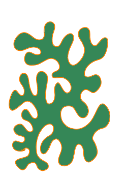

Click and drag the vertices (yellow) and tips of the tangents (green) to adjust the shape of the curve!
Lately I've been studying a coral-shaped motif that appears often in my art. Here's an example:
I'm working towards modeling this shape with bezier curves in quad-shaped tiles. As a first step, I want to explore how the curve flows through the tile. This interactive tile will help me explore the possible shapes and develop guidelines on how to place control points to match the art style.